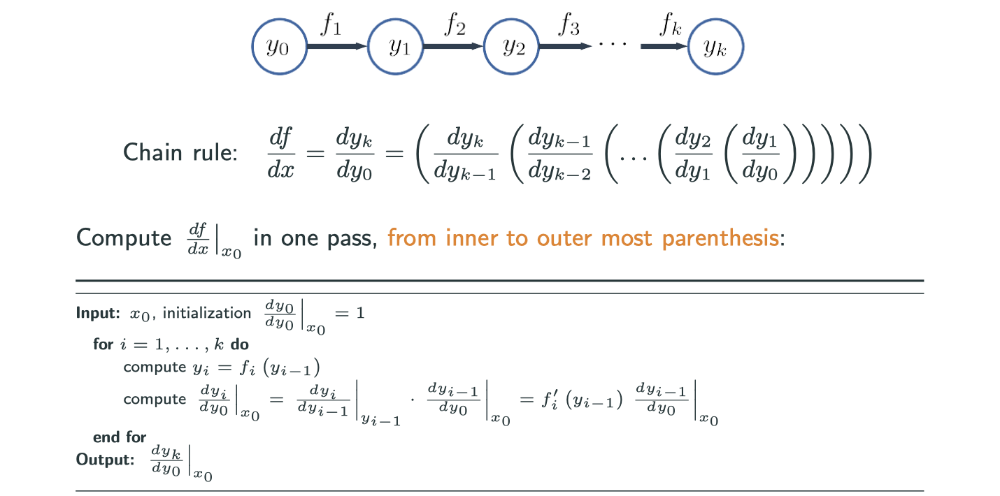
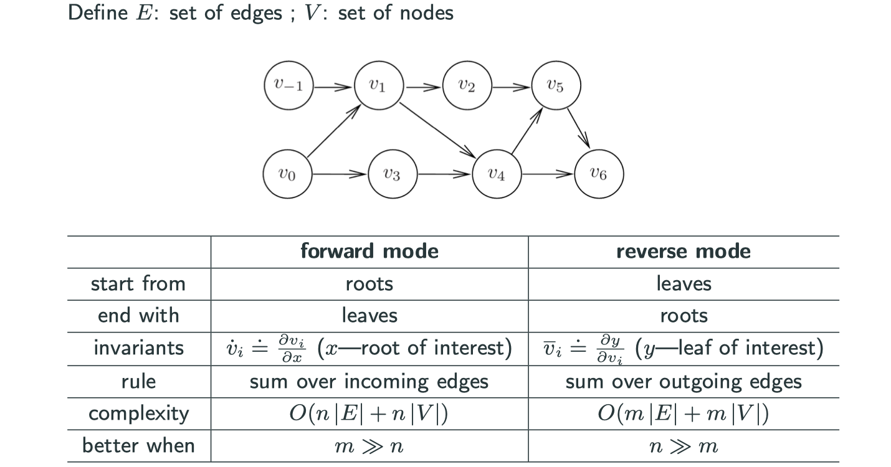

Numerical Optimization: Computing Derivatives
Acknowledgement: This course (CSCI 8980) is being offered by Prof. Ju Sun at the University of Minnesota in Fall 2020. Pictures of slides are from the course.
Numerical Optimization: Computing Derivatives
No matter which iterative methods you choose to use in order to do numerical optimization, you almost have to entail low-order derivatives (i.e., gradient and/or Hessian) to proceed. In other words, numerical derivatives (i.e., numbers) needed for the iterations.
In genreal, there are four kinds of computing techniques:
The main topic of this blog is about Auto Differentiation.
Analytic Derivatives
The idea is to derive the analytic derivatives first, then make numerical substitution.
To derive the analytic derivatives by hand, we usually apply the chain rule (vector version) method.
Let and
, and
is differentiable at
and
is differentiable at
. Then
is differentiable at
, and
when
And another method we usually use is Taylor expansion method, it’s a bit uncommon but it’s convinient for certain functions and high-dimensional functions.
Symbolic Differentiation
Idea: derive the analytic derivatives first, then make numerical substitution. Usually, software can derive the analytic derivatives for us, such as Matlab (Symbolic Math Toolbox, diff), Python (SymPy, diff), and Mathematica (D)
Limitation of analytic diferentiation
What is the gradient and/or Hessian of
Applying the chain rule is boring and error-prone, and performing Taylor expansion is also tedious. The lession we learn from tech history is to leave boring jobs to computers.
Approxiamte the gradient
Similiarly, to approximate the Jacobian for
Why people prefer the central version?
If you want to get a error rate of , in forward scheme you have to set
to be
. But in central scheme, you only need to set
to be
.

Second-order methods are expensive storage-wise and computation-wise. In fact, what you need in all second-order methods are approximations of Hessian but not exact Hessian. Typically, what you need is , and this is not Hessian itself but Hessian multiplying with a vector.
Auto Differentiation
Auto Differentiation in 1D
Consider a univaiate function . Write
, or in computational graph form:
Also, we represent chain rule in Leibniz form:
How to evaluate the product?
- From left to right in the chain (follow the arrow): forward mode auto diff
- From right to left in the chain: backward/reverse mode auto diff
- Hybrid: mixed mode
Forward mode in 1D

Reverse mode in 1D
The remarkable difference is firstly you need the forward part (traveling following the arrow) and calculate all the numerical values, and secondly move backward.
Forward vs Reverse
- Forward mode AD: one forward pass, compute
’s and
's together
- Reverse mode AD: one forward pass to compute
's
Auto Differentiation in High Dimension
Let and
, and
is differentiable at
and
is differentiable at
. Then
is differentiable at
, and
A multivariate example – forward mode
Forward mode auto differentiation depends on the input dimension.
A multivatiate example – reserve mode
Note: means
. There is a name for this variable in auto differentiation community, which is caleld adjoint variable.
Reverse mode auto differentiation depends on the output dimension, which is exactly why nowadays netral networks prefer reverse mode because the ouput dimension is usually one dimension. This is also what people call backprop (back propagation) in deep learning.
Forward vs Reserve
Both of them cannot deal with loops in computational graph, i.e., acyclic graph.

The forward mode starts with roots, while reverse mode starts with leaves.
Implementation Trick – Tensor Abstration
On previous images, those nodes in the computational graph are scalar, which is fine when we only have 1 or 2 variables. However, if the dimension grows to be very large but we still use scalar representation, it’s going to be really messy. But today we have a wonderful idea of tensor, and lots of useful packages already implemented. Now we’re able to represent each node in computational graph as a vector, matrix, 3-D tensor, …
Now the difference is that we have to apply chain rule in tensors rather than scalars.
Implementation Trick – Vector Jacobian Product (VJP)
Interested in for
. Implement
for any
Why VJP is interesting? Why is it a stardard practice in lots of auto differentiation packages?
The idea is that if you just give me the and
then I can retain the value. Even if you want the Jacobian at this point, if you just set the
in
to be
(elementary vector/matrix) for
then you recover rows of
. Another benefit is that it’s often enough for application, e.g., calculate
with known
Why possible?
Good to know: